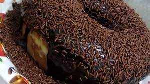

Bolo de Chocolate Com Cobertura de Brigadeiro

INGREDIENTES
MASSA
- 5 ovos
- 1 xícara de chá de leite
- 1 xícara de chá de açúcar
- 1 xícara de chocolate em pó Dr. Oetker
- 2 xícaras de farinha de trigo
- 1 colher de sopa de fermento em pó Dr. Oetker
Recheio e Cobertura
- 2 latas de leite condensado
- 3 colheres de sopa de chocolate em pó Dr. Oetker
- 1 colher de sopa de margarina
- 1 lata de creme de leite (ou até dar o ponto)
- Coco ralado Dr. Oetker ou chocolate granulado Dr. Oetker ou nozes picadas ou raspas de chocolate a gosto para cobrir
Calda Para Molhar o Bolo
- 1 xícara de leite
- 1 xícara de água
- 2 colheres de sopa de chocolate em pó Dr. Oetker
MODO DE PREPARO
MASSA
- 1:Bata as claras em neve bem firmes, acrescente as gemas uma a uma, o açúcar, e continue batendo. Depois o leite bem aos pouquinhos, desligue e peneire para cima da massa a farinha e o chocolate Dr. Oetker e mexa delicadamente.
- 2:Por último coloque o fermento Dr. Oetker e misture, a massa deve ficar bem leve e fofa parecendo espuma, por isso coloque o leite aos poucos para não perder o ponto.
- 3:Por último coloque o fermento Dr. Oetker e misture, a massa deve ficar bem leve e fofa parecendo espuma, por isso coloque o leite aos poucos para não perder o ponto.
RECHEIO
- 1:Leve ao fogo médio/baixo em uma panela: o leite condensado, o chocolate em pó Dr. Oetker e a margarina até desgrudar da panela (ponto de brigadeiro), espere esfriar e acrescente o creme de leite aos poucos e vá mexendo até ficar bem cremoso e fácil de espalhar.
CALDA
- 1:Misturar tudo e levar em fogo alto até que reduza pela metade.
MONTAGEM
- 1:Corte o bolo em 2 partes molhe com a calda e recheie e cubra com o recheio de brigadeiro. Polvilhe coco ralado ou nozes ou chocolate granulado ou em raspas e sirva.
- 2:Corte o bolo em 2 partes.